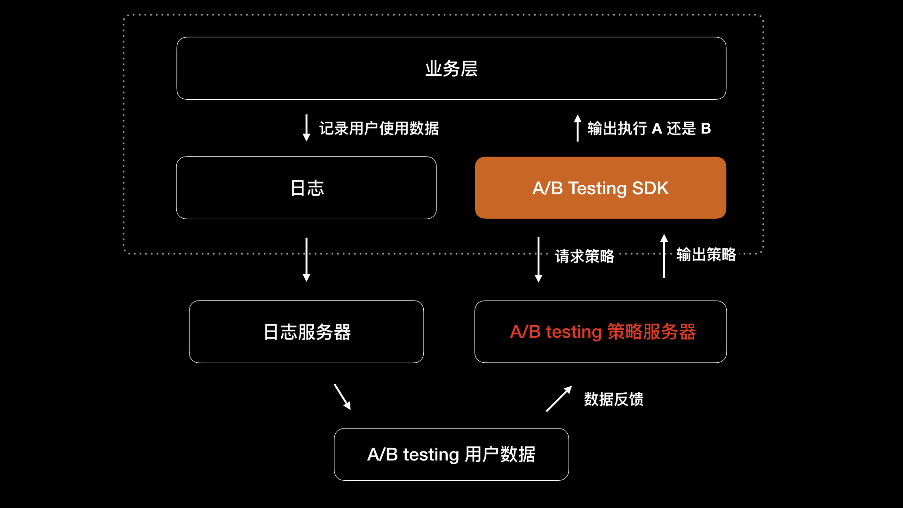

- 00 开篇词 锚定一个点，然后在这个点上深耕.md.html
- 01 建立你自己的iOS开发知识体系.md.html
- 02 App 启动速度怎么做优化与监控？.md.html
- 03 Auto Layout 是怎么进行自动布局的，性能如何？.md.html
- 04 项目大了人员多了，架构怎么设计更合理？.md.html
- 05 链接器：符号是怎么绑定到地址上的？.md.html
- 06 App 如何通过注入动态库的方式实现极速编译调试？.md.html
- 07 Clang、Infer 和 OCLint ，我们应该使用谁来做静态分析？.md.html
- 08 如何利用 Clang 为 App 提质？.md.html
- 09 无侵入的埋点方案如何实现？.md.html
- 10 包大小：如何从资源和代码层面实现全方位瘦身？.md.html
- 11 热点问题答疑（一）：基础模块问题答疑.md.html
- 12 iOS 崩溃千奇百怪，如何全面监控？.md.html
- 13 如何利用 RunLoop 原理去监控卡顿？.md.html
- 14 临近 OOM，如何获取详细内存分配信息，分析内存问题？.md.html
- 15 日志监控：怎样获取 App 中的全量日志？.md.html
- 16 性能监控：衡量 App 质量的那把尺.md.html
- 17 远超你想象的多线程的那些坑.md.html
- 18 怎么减少 App 电量消耗？.md.html
- 19 热点问题答疑（二）：基础模块问题答疑.md.html
- 20 iOS开发的最佳学习路径是什么？.md.html
- 21 除了 Cocoa，iOS还可以用哪些 GUI 框架开发？.md.html
- 22 细说 iOS 响应式框架变迁，哪些思想可以为我所用？.md.html
- 23 如何构造酷炫的物理效果和过场动画效果？.md.html
- 24 A_B 测试：验证决策效果的利器.md.html
- 25 怎样构建底层的发布和订阅事件总线？.md.html
- 26 如何提高 JSON 解析的性能？.md.html
- 27 如何用 Flexbox 思路开发？跟自动布局比，Flexbox 好在哪？.md.html
- 28 怎么应对各种富文本表现需求？.md.html
- 29 如何在 iOS 中进行面向测试驱动开发和面向行为驱动开发？.md.html
- 30 如何制定一套适合自己团队的 iOS 编码规范？.md.html
- 31 iOS 开发学习资料和书单推荐.md.html
- 32 热点问题答疑（三）.md.html
- 33 iOS 系统内核 XNU：App 如何加载？.md.html
- 34 iOS 黑魔法 Runtime Method Swizzling 背后的原理.md.html
- 35 libffi：动态调用和定义 C 函数.md.html
- 36 iOS 是怎么管理内存的？.md.html
- 37 如何编写 Clang 插件？.md.html
- 38 热点问题答疑（四）.md.html
- 39 打通前端与原生的桥梁：JavaScriptCore 能干哪些事情？.md.html
- 40 React Native、Flutter 等，这些跨端方案怎么选？.md.html
- 41 原生布局转到前端布局，开发思路有哪些转变？.md.html
- 42 iOS原生、大前端和Flutter分别是怎么渲染的？.md.html
- 43 剖析使 App 具有动态化和热更新能力的方案.md.html
- 用户故事 我是如何学习这个专栏的？.md.html
- 结束语 慢几步，深几度.md.html
- 捐赠
24 A_B 测试：验证决策效果的利器
你好，我是戴铭。今天，我来跟你聊聊验证决策的利器 A/B测试。
现在App Store中的应用，就像商场中的商品一样琳琅满目，可以解决用户各个方面的需求。这时，你要想创新，或者做出比竞品更优秀的功能，是越来越不容易。所以，很多公司都必须去做一些实验，看看有哪些功能可以增强自己App的竞争力，又有哪些功能可以废弃掉。而进行这样的实验的主要方法，就是A/B 测试。
A/B测试，也叫桶测试或分流测试，指的是针对一个变量的两个版本 A 和 B，来测试用户的不同反应，从而判断出哪个版本更有效，类似统计学领域使用的双样本假设测试。
简单地说，A/B测试就是检查App 的不同用户在使用不同版本的功能时，哪个版本的用户反馈最好。
比如，引导用户加入会员的按钮，要设置为什么颜色更能吸引他们加入，这时候我们就需要进行 A/B测试。产品接触的多了，我们自然清楚一个按钮的颜色，会影响到用户点击它，并进入会员介绍页面的概率。
这里我再和你分享一件有意思的事儿。记得我毕业后去新西兰的那段时间里，认识了一个住在海边的油画家，她在海边还有一间画廊，出售自己的作品还有美院学生的作品。
有一天她要给画廊门面重涂油漆，叫我过去帮忙。涂漆之前问我用什么颜色好，我环顾下了旁边的店面，大多是黑色、灰色和深蓝色，而我觉得卖橄榄球衣服那家的黑底红字，看起来很帅气，于是就说黑色可能不错。
她想了想摇头说：我觉得橙色好，因为这附近都是暗色调，如果用了明亮的橙色可能更容易吸引游客。结果呢，后来一段时间进店的人确实多了，而且画也卖得多了。
当然了，我举这个例子的目的不是说用了橙色就一定能够提高用户进店率。试想一下，如果这个画廊周围都是花花绿绿的店面，你还能够保证橙色会吸引用户吗。
实际情况往往要比选择门面颜色更复杂，也只有有专业经验的人才可以做出正确的决策，但并不是每个人都是有相关领域经验的专家。所以，就有了A/B测试这一利器，来辅助我们进行决策。
知乎上有个关于A/B测试的问答，里面列举了很多关于实际案例，有兴趣的话你可以去看看。接下来，我和你说说iOS中的A/B测试。
App 开发中的 A/B测试
从 App 开发层面看，新版本发布频繁，基本上是每月或者每半月会发布一个版本。那么，新版本发布后，我们还需要观察界面调整后情况如何，性能问题修复后线上情况如何，新加功能使用情况如何等。这时，我们就需要进行A/B测试来帮助我们分析这些情况，通过度量每个版本的测试数据，来确定下一个版本应该如何迭代。
对于 App 版本迭代的情况简单说就是，新版本总会在旧版本的基础上做修改。这里，我们可以把旧版本理解为 A/B测试里的 A 版本，把新版本理解为B 版本。在 A/B测试中 A 版本和 B 版本会同时存在，B 版本一开始是将小部分用户放到 B 测试桶里，逐步扩大用户范围，通过分析A版本和 B 版本的数据，看哪个版本更接近期望的目标，最终确定用哪个版本。
总的来说，A/B测试就是以数据驱动的可回退的灰度方案，客观、安全、风险小，是一种成熟的试错机制。
A/B测试全景设计
一个 A/B测试框架主要包括三部分：
策略服务，为策略制定者提供策略；
A/B测试 SDK，集成在客户端内，用来处理上层业务去走不同的策略；
日志系统，负责反馈策略结果供分析人员分析不同策略执行的结果。
其中，策略服务包含了决策流程、策略维度。A/B测试 SDK 将用户放在不同测试桶里，测试桶可以按照系统信息、地址位置、发布渠道等来划分。日志系统和策略服务，主要是用作服务端处理的，这里我就不再展开了。
下图是 A/B测试方案的结构图：- 
今天我主要跟你说下客户端内的 A/B测试 SDK。从 iOS 开发者的角度看 A/B测试，如何设计或选择一个好用的 A/B测试 SDK 框架才是我们最关心的。
A/B测试 SDK
谈到A/B测试 SDK框架，我们需要首先要考虑的是生效机制。生效机制主要分为冷启动生效和热启动生效，相对于冷启动，热启动落实策略要及时些。但是，考虑到一个策略可能关联到多个页面或者多个功能，冷启动可以保持策略整体一致性。
所以我的结论是，如果一个策略只在一个地方生效的话，可以使用热启动生效机制；而如果一个策略在多个地方生效的话，最好使用冷启动生效机制。
除了生效机制，A/B测试SDK框架对于业务方调用接口的设计也很重要。你所熟悉的著名 AFNetworking 网络库和 Alamofire 网络库的作者 Mattt ，曾编写过一个叫作SkyLab的A/B测试库。
SkyLab 使用的是NSUserDefault 保存策略，使得每个用户在使用过程中，不管是在哪个测试桶里，都能够保持相同的策略。 SkyLab 对外的调用接口，和 AFNetworking 一样使用的是 Block ，来接收版本A 和 B的区别处理。这样设计的接口易用性非常高。
通过 SkeyLab 原理的学习，你能够体会到如何设计一个优秀易用的接口。这，对你开发公用库的帮助会非常大。
接下来，我们先看看 SkeyLab 接口使用代码，示例如下：
// A/B Test
[SkyLab abTestWithName:@"Title" A:^{
self.titleLabel.text = NSLocalizedString(@"Hello, World!", nil);
} B:^{
self.titleLabel.text = NSLocalizedString(@"Greetings, Planet!", nil);
}];
可以看出，Mattt这个人的接口设计功底有多强了。你一看这两个 block 参数名称，就知道是用来做A/B测试的，简单明了。接下来，我们再进入接口看看 Mattt 是具体怎么实现的。
+ (void)abTestWithName:(NSString *)name
A:(void (^)())A
B:(void (^)())B
{
[self splitTestWithName:name conditions:[NSArray arrayWithObjects:@"A", @"B", nil] block:^(NSString *choice) {
if ([choice isEqualToString:@"A"] && A) {
// 执行版本 A
A();
} else if ([choice isEqualToString:@"B"] && B) {
// 执行版本 B
B();
}
}];
}
你会发现 SkyLab:abTestWithName:A:B: 方法只是一个包装层，里面真正的实现是 SkyLab:splitTestWithName:conditions:block 方法，其定义如下：
+ (void)splitTestWithName:(NSString *)name
conditions:(id <NSFastEnumeration>)conditions
block:(void (^)(id condition))block;
通过定义你会发现，conditions 参数是个 id 类型，通过类型约束，即使用 NSFastEnumeration 协议进行了类型限制。Mattt 是希望这个参数能够接收字典和数组，而字典和数组都遵循NSFastEnumeration 协议的限制，两者定义如下：
@interface NSDictionary<__covariant KeyType, __covariant ObjectType> : NSObject <NSCopying, NSMutableCopying, NSSecureCoding, NSFastEnumeration>
@interface NSArray<__covariant ObjectType> : NSObject <NSCopying, NSMutableCopying, NSSecureCoding, NSFastEnumeration>
在这里，我和你介绍这个接口的设计方式，是因为这个设计非常赞，非常值得我们学习。类型约束，是苹果公司首先在 Swift 泛型引入的一个特性，后来引入到了 Objective-C 中。
而之所以设计 conditions 这个支持数组和字典的参数，本来是为了扩展这个SkyLab 框架，使其不仅能够支持 A/B测试，还能够支持更为复杂的 Multivariate testing或 Multinomial testing。Multivariate testing 和 Multinomial testing 的区别在于，支持更多版本变体来进行测试验证。
接下来，我们再看看 SkyLab 是如何做人群测试桶划分的。
SkyLab 使用的是随机分配方式，会将分配结果通过 NSUserDefaults 进行持续化存储，以确保测试桶的一致性。其实测试桶分配最好由服务端来控制，这样服务端能够随时根据用户群的维度分布分配测试桶。
如果你所在项目缺少服务端支持的话，SkyLab 对测试桶的分配方式还是非常值得借鉴的。SkyLab 对 A/B测试的测试桶分配代码如下：
static id SLRandomValueFromArray(NSArray *array) {
if ([array count] == 0) {
return nil;
}
// 使用 arc4random_uniform 方法随机返回传入数组中某个值
return [array objectAtIndex:(NSUInteger)arc4random_uniform([array count])];
}
代码中的 array 参数就是包含 A 和 B 两个版本的数组，随机返回 A 版本或 B 版本，然后保存返回版本。实现代码如下：
condition = SLRandomValueFromArray(mutableCandidates);
// 判断是否需要立刻进行同步保存
BOOL needsSynchronization = ![condition isEqual:[[NSUserDefaults standardUserDefaults] objectForKey:SLUserDefaultsKeyForTestName(name)]];
// 通过 NSUserDefaults 进行保存
[[NSUserDefaults standardUserDefaults] setObject:condition forKey:SLUserDefaultsKeyForTestName(name)];
if (needsSynchronization) {
[[NSUserDefaults standardUserDefaults] synchronize];
}
持久化存储后，当前用户就命中了 A和B 版本中的一个，后续的使用会一直按照某个版本来，操作的关键数据会通过日志记录，并反馈到统计后台。至此，你就可以通过 A、B 版本的数据比较，来决策哪个版本更优了。
小结
今天我跟你说了 A/B测试在产品中的重要性，特别是在 App 版本迭代时，A/B测试可以帮助我们判断新版本的功能更新是否能够更好地服务用户。然后，我为你展示了 A/B测试方案的全景设计，并针对其中iOS开发者最关注的A/B测试 SDK 的设计做了详细分享。
通过 Mattt 设计的 SkyLab 这个 A/B测试 SDK框架，你会发现好的接口设计不是凭空想出来的，而是需要一定的知识积累。比如，将泛型的类型约束引入到 Objective-C 中以提高接口易用性，这需要了解Swift才能够做到的。
今天我在看评论区的留言时，有同学问我现在应该学习 Objective-C 还是 Swift，为什么？我想，我们今天对 SkyLab 接口的分析应该就是最好的回答了。知识的学习最好结合工作需求来，无论是 Objective-C 还是 Swift，最重要的还是代码设计能力。
课后作业
今天我留给你一个作业，前面我提到 Swift 是值得学习的，那么今天的作业就是参照 SkyLab，使用 Swift 来写一个 A/B测试 SDK。
感谢你的收听，欢迎你在评论区给我留言分享你的观点，也欢迎把它分享给更多的朋友一起阅读。
© 2019 - 2023 Liangliang Lee. Powered by gin and hexo-theme-book.